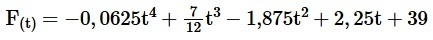

Wie löse ich Matheaufgaben?
Kurvendiskussion
Anwendungsaufgaben zu
ganzrationalen Funktionen
Sie sehen ein gelbes Eingabefeld und die
Schalter: Prüfen und Lösung.
Tragen Sie Ihr Ergebnis ein, prüfen Sie es
oder starten Sie eine Lösung.
Aufgabe 71
Der Innenbogen eines parabelförmigen Bauwerks wird durch die Gleichung
beschrieben. a) Wie hoch und wie breit ist der Bogen? b) Unter welchem Innenwinkel trifft der rechte Bogen auf die Grundfläche? c) In welcher Höhe kann ein Flugzeug mit einer Breite von 18 m durch den Bogen fliegen, wenn ein vertikaler und horizontaler Sicherheitsabstand von 10 m zu dem Bogen vorgeschrieben ist?Aufgabe 72
Ein Betrieb hat fixe Kosten von 10 GE. Seine Kostenfunktion 3. Grades hat einen Wendepunkt bei (10;120) und dort eine Steigung von 1. Sein Erlös beträgt 25,3 GE/ME. Wie hoch ist sein maximaler Gewinn G?
G = GE.Aufgabe 73
Die Kostenfunktion eines Betriebes lautet:
Er erlöst 44 GE/ME. Bei welcher Produktionsmenge x erzielt er den höchsten Gewinn?Aufgabe 74
Eine Kostenfunktion 3. Grades hat an der Stelle x = 0 die Steigung 2. An der Stelle x = 8 liegt ihr Wendepunkt mit der Steigung 0,4. Die fixen Kosten betragen 20 GE. Wie hoch sind die Kosten K im Wendepunkt?
K = GE.Aufgabe 75
Eine Kostenfunktion 3. Grades hat einen Wendepunkt bei (4|30), und dort eine Steigung von 0,2. Die fixen Kosten betragen 10 GE.
a) Berechnen Sie Gewinnschwelle und -grenze, wenn der Erlös 8,3 GE/ME beträgt. b) Wie hoch ist der maximale Gewinn G?Aufgabe 76
Die Fieberkurve eines Patienten lässt sich durch die Funktion F(t) in °C beschreiben, wenn t die Anzahl der Tage angibt:

a) Welche Temperatur hatte der Patient zu Beginn der Messung? b) Welche hatte er am 5. Tag? c) Welche maximale Temperatur T hatte er? T = °. An welchem Tag?Aufgabe 77
Die Tagestemperatur O an der Oberfläche eines Sees lässt sich durch
beschreiben, wenn O die Temperatur in °C und t die Zeit in Stunden angibt. a) Wie hoch ist die Temperatur im Wendepunkt des Graphen? b) Nach wie viel Stunden betrug die Temperatur 18°C? c) Wann war die Temperatur am höchsten? d) Wie groß war die Temperaturdifferenz an diesem Tag?Aufgabe 78
Die Messung der Oberflächentemperatur O eines Bergsees im Verlaufe eines Tages ergab die Werte: Um 0.00 waren es 19°C, der niedrigste Wert in den ersten 12 Stunden von 17,8°C um 6.00 Uhr und der höchste um 17.00.
a) Wie lautet die Funktionsgleichung 3. Grades, die diesen Sachverhalt beschreibt? b) Um wieviel Uhr stieg die Temperatur am stärksten? Um Uhr. c) Wie groß ist die Änderungsrate um 22.00 Uhr?Aufgabe 79
Eine Firma produziert wöchentlich x Geräte. Die
fixen Kosten betragen
2 000 €, die variablen
Kosten 0,8x2 + 60x. Jedes Gerät kostet 180 €.
Aufgabe 80
Ein Betrieb produziert mit der Kostenfunktion
und einer Umsatzfunktion U(x) = 41,5x. a) Zeigen Sie, dass K(x) keinen Extremwert hat. b) Welche betriebswirtschaftliche Bedeutung hat der Wendepunkt der Kostenfunktion? c) Berechnen Sie das Betriebsoptimum, wenn die Stückkostenfunktion ihr Minimum bei x = 500 hat. d) Die Gewinnschwelle liegt bei 250 ME. Wo liegt die Gewinngrenze? Bei ME e) Bei welcher Produktionsmenge entsteht das Gewinnmaximum?Aufgabe 81
Die Tabelle zeigt die Kosten K(x) eines Betriebes abhängig von der gefertigten Menge x.
x 0 2 5 8 K(x) 64/3 31 24,25 40a) Ermitteln Sie die ganzrationale Kostenfunktion 3. Grades. b) Wie groß sind das Kostenminimum und -maximum? c) Wo liegt die Gewinnschwelle, wenn die Gewinngrenze 8 ME und der Erlös 5 GE/ME betragen? d) Wie groß ist der maximale Gewinn?
Aufgabe 82
Fixkosten Kf von 21 600 GE und variable Kosten
und E(x) = 73x. a) Wie hoch ist der Kostenanstieg bei einer Steigerung der Produktion von 100 auf 101 ME? Wie groß ist die Änderungsrate für 100 ME? b) Wo liegt die Gewinnzone? c) Wie groß ist die Produktionsmenge M im Betriebsoptimum? M = MEAufgabe 83
Ein Betrieb arbeitet mit der Kostenfunktion
und mit der Erlösfunktion E(x) = 10x. a) Wie hoch ist der maximale Gewinn? b) Bei welcher Produktionsmenge liegt das Betriebsoptimum? c) Bei welcher Produktionsmenge liegt das Betriebsminimum?Aufgabe 84
Die Steigerung E der Aktivität von Zellen, die Tumore angreifen, hängt von der Dosis x eines Präparates in μl/kg des Körpergewichts der Patienten ab. Die Steigerung lässt sich durch
beschreiben. a) Bei welcher Dosis ist die Wirkung am größten? Bei x = μl/kg b) Welche Dosis ist für einen Patienten von 85 kg optimal? c) Gibt es eine Dosis, die zu keiner Steigerung führt?Aufgabe 85
Die Kostenfunktion
gibt die Kosten in 1000 € an, die für x Einheiten zu je 10 000 Stück bei der Herstellung anfallen. a) Bei welcher Produktionsmenge sind die Stückkosten am niedrigsten? b) Bei welcher sind die Grenzkosten am niedrigsten? c) Für welche Produktionsmenge ist bei einem Stückpreis von 2,20 € der Ertrag positiv? d) Für welche Produktionsmenge ist bei einem Stückpreis von 2,20 € der Ertrag am größten?Aufgabe 86
Ein Händler verkauft ein Bauteil zu einem Preis von 60 €. Er arbeitet mit der Kostenfunktion
a) Berechnen Sie die Gewinnzone. b) Bei welcher verkauften Menge ist der maximale Gewinn? Bei ME c) Bei welcher produzierten Menge hat er minimale Stückkosten?Aufgabe 87
Eine Firma verkauft im Monat 10 000 Artikel zu je 10 €. Ihre Produktionskosten setzen sich zusammen aus 50 000 € Fixkosten und 2 € pro produziertem Artikel.
a) Ab welcher Stückzahl erzielt sie Gewinn? Wird der Verkaufspreis um je 0,20 €/Stück gesenkt, erhöht sich die verkaufte Menge um je 500 Stück. b) Bei welchem Stückpreis entsteht maximaler Gewinn? c) Bei welchem Stückpreis wird am meisten verkauft?Aufgabe 88
Von einem Lebensmittel verkauft ein Händler
monatlich 10 000 kg zu einem Preis von 10 €/kg.
Bei einer Preissenkung von 0,25 €/kg kann er mit
einer Verkaufssteigerung von 1 000 kg/Monat
rechnen. Bei welchem Verkaufspreis erzielt er
maximalen Gewinn, wenn er Selbstkosten von
7 €/kg hat?
Aufgabe 89
Die Angebotspreisfunktion eines Produzenten lautet
Die Nachfragepreisfunktion nach diesem Produkt lautet Auf das Angebot erhebt der Staat die Steuern s. Welche Steuer sollte der Staat erheben, damit seineEinnnahmen maximal sind aber Marktgleichgewicht herrscht?Aufgabe 90
Bei welcher Steuer s pro Mengeneinheit sind die Steuereinnahmen maximal, wenn die Angebotspreisfunktion
und die Nachfragepreisfunktion betragen? s = GE/ME €.Aufgabe 91
Ein Produzent liefert einem Großhändler eine Ware zu 36 €/Stück. Seine Kosten ermittelt er mit der Funktion
für die ersten 150 Stück. Danach arbeitet er mit einer linearen Kostenfunktion. Die Gesamtkostenfunktion K(x) soll an der Stelle x = 150 differenzierbar sein. a) Wie lautet die Kostenfunktion K₂ für x ≥ 150? b) Ab welcher Stückzahl macht der Hersteller Gewinn? c) Bei welcher Stückzahl ist der Gewinn am größten?Aufgabe 92
Einige Länder erheben beim Anbieter eine Steuer s auf Luxusartikel.
a) Bei welcher Menge liegt das Marktgleichgewicht vor der Einführung der Steuer, wenn die Angebots- funktion und die Nachfragefunktion b) Wie groß ist der Steuersatz, wenn die Steuereinnahme S maximal sein soll? Er beträgt GE/ME. c) Bei welcher Menge liegt dann das Marktgleichgewicht? GE/ME €.Aufgabe 93
Bei einer Marktuntersuchung stellt ein Hersteller fest, welche Anzahl von seinem Produkt bei unterschiedlichen Preisen verkauft wird.
Preis in € 7,40 7 6,60 6,20 5,8 Anzahl 20 40 60 80 100a) Wie lautet die lineare Preisabsatzfunktion p? b) Wo liegen Gewinnschwelle und Gewinngrenze, wenn die Kostenfunktion lautet? c) Wie hoch ist der maximale Gesamtgewinn?
Aufgabe 94
Für eine ganzrationale Kostenfunktion 3. Grades existiert die folgende Wertetabelle.
x in ME 0 1 2 3 K(x) in GE 24 38 40 42a) Bei welcher Menge hat die Grenzkostenfunktion ein Minimum? b) In welchem Bereich liegt die Gewinnzone, wenn E(x) = 14x? Gewinngrenze bei ME. c) Wie hoch ist der maximale Gewinn?
Aufgabe 95
Ein Unternehmen beschreibt seinen Gewinn mit
für 0 ≤ x ≤ 25 a) Bei welcher Stückzahl entsteht der maximale Gewinn? b) Wie hoch ist er?Aufgabe 96
Ein Betrieb hat Grenzkosten von konstant 100 GE.
a) Bei welcher verkauften Menge hat er maximalen Gewinn, wenn er mit der Erlösfunktion arbeitet? Bei ME b) Zu welchem Preis p bietet er dabei an? c) Wie hoch ist der maximale Gewinn?Aufgabe 97
Ein Monopolist arbeitet mit der Preisabsatzfunktion
und der Kostenfunktion . a) Wie hoch sind der maximale Preis und die Sättigungsmenge S? b) Berechnen Sie die Gewinnzone? c) Bei welcher Menge entsteht der maximale Gewinn?Aufgabe 98
Ein Monopolist arbeitet mit einer Kostenfunktion
und einer linearen Nachfragefunktion pN(x). Sein Höchstpreis ist 70 GE und die Sättigungsmenge 20 ME. a) Bei welcher Menge liegt sein Betriebsoptimum? b) Berechnen Sie die Gewinnzone. GG = ME c) Wie hoch ist der maximale Gewinn? d) Wie hoch ist sein Gewinn, wenn er mit seiner Grenzkostenfunktion als Angebotsfunktion arbeitet?Aufgabe 99
Die Kostenfunktion eines Monopolisten lautet
seine Nachfragefunktion . a) Wo liegt seine Gewinnschwelle? b) Bei welcher Produktionsmenge entstehen sein maximaler Erlös und Gewinn? c) Bei welcher Produktionsmenge liegt sein Betriebsminimum?Aufgabe 100
Ein Monopolist hat eine Preisabsatzfunktion
und eine Kostenfunktion . a) Wo liegt die langfristige Preisuntergrenze? b) Wo liegt die kurzfristige Preisuntergrenze? c) Wo liegt die Gewinnzone? d) Welche Koordinaten hat der Cournotsche Punkt? Der Betrieb hat 8% höhere Lohnkosten. Die Lohnkosten machen 75% der variablen Kosten aus. e) Wie hoch ist jetzt der Gesamtgewinn? G = GE f) Wie hoch sind die Durchschnittskosten ud der Durchschnittsgewinn?Aufgabe 101
Ein Hersteller hat neben einer Preisabsatzfunktion
eine Kostenfunktion . a) Wie hoch sind sein maximaler Gewinn und die Koordinaten des Cournotschen Punktes? b) Wo liegt seine Gewinnzone? c) Berechnen Sie sein Betriebsminimum B und seine kurzfristige Preisuntergrenze.Aufgabe 102
Ein Monopolist produziert 20 Stück eines Bauteils
zu Gesamtkosten von
6 000 €. 60 Stück zu 18 000 €.
Beidiesen Mengen arbeitet er kostenneutral. Als
Kostenfunktion benutzt er eine quadratische
Funktion mit Fixkosten von 5 400 €. als Erlösfunktion eine lineare Funktion.
Bei welcher verkauften Menge erzielt er maximalen
Gewinn?
Aufgabe 103
Ein Hersteller arbeitet mit einer Kostenfunktion 3. Grades. Er hat Fixkosten von 720 €, durch- schnittliche variable Kosten von 50 € bei einer produzierten Menge von 100 Stück, Grenzkosten von 48,03 € bei einem Stück und Durchschnittskosten für 20 Stück von 70 €. Sein Erlös beträgt 53 €/Stück.
a) Bei welcher Menge liegt sein Betriebsminimum? b) Wie hoch ist sein maximaler Gewinn?Aufgabe 104
Ein Betrieb hat die Kostenfunktion
und eine lineare Preisabsatzfunktion mit einer Sättigungsmenge von 20 ME und einem Höchstpreis von 350 GE. a) Wie groß ist die kostengünstigste Produktionsmenge? Es sind ME b) Wie groß ist sein maximaler Gewinn? c) Wie groß ist sein maximaler Gewinn, wenn er die Grenzkostenfunktion als Preisabsatzfunktion einsetzt?zurück